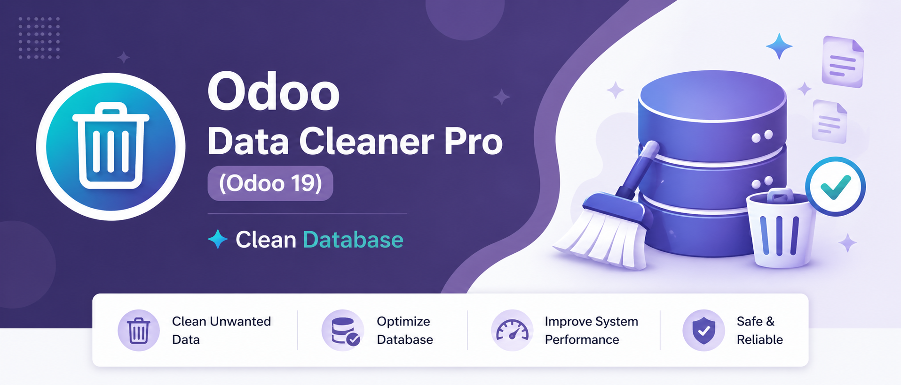
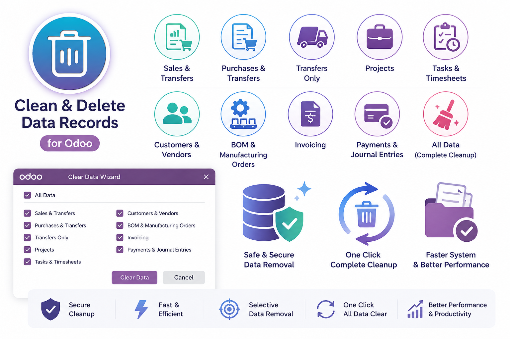
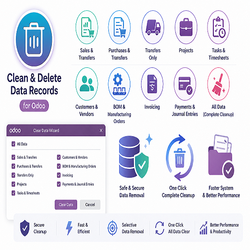
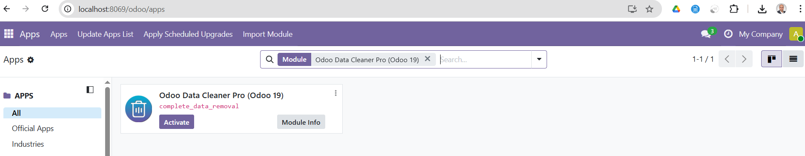
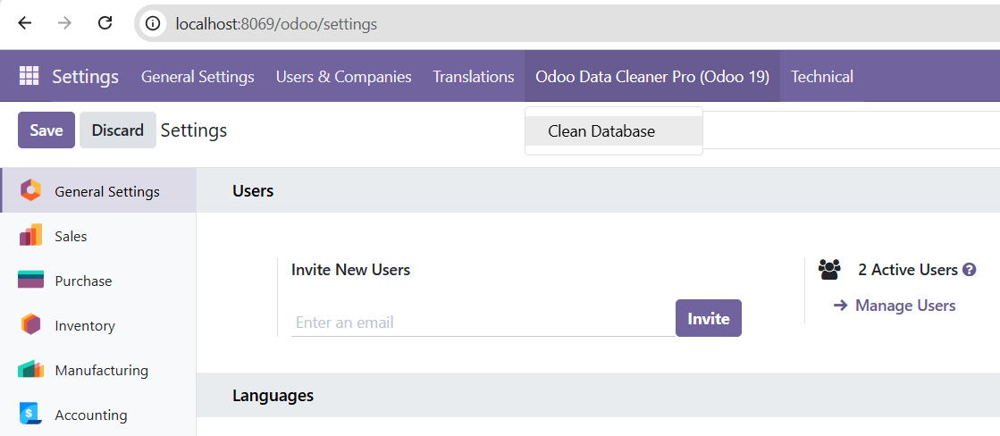
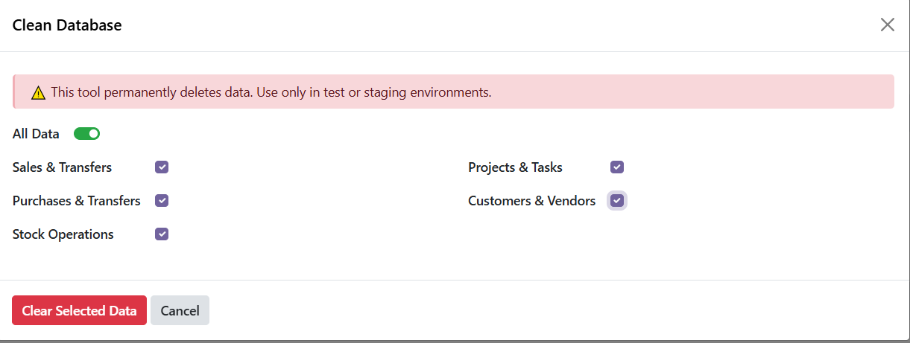
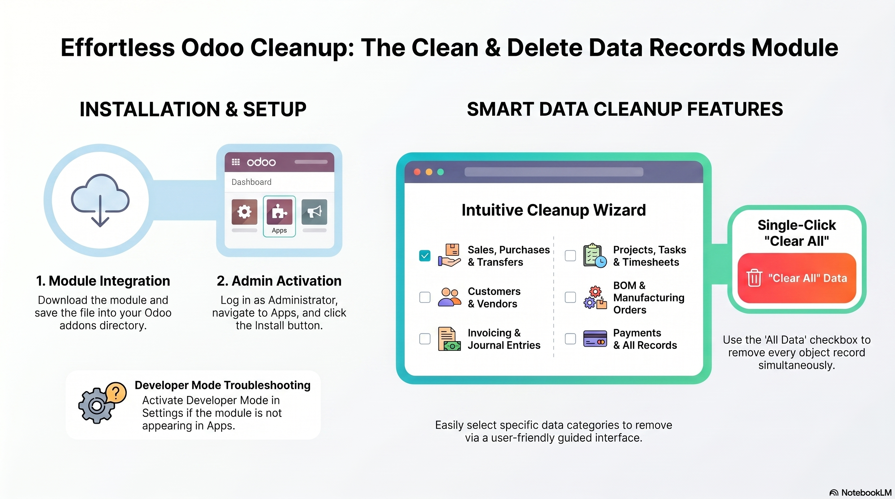
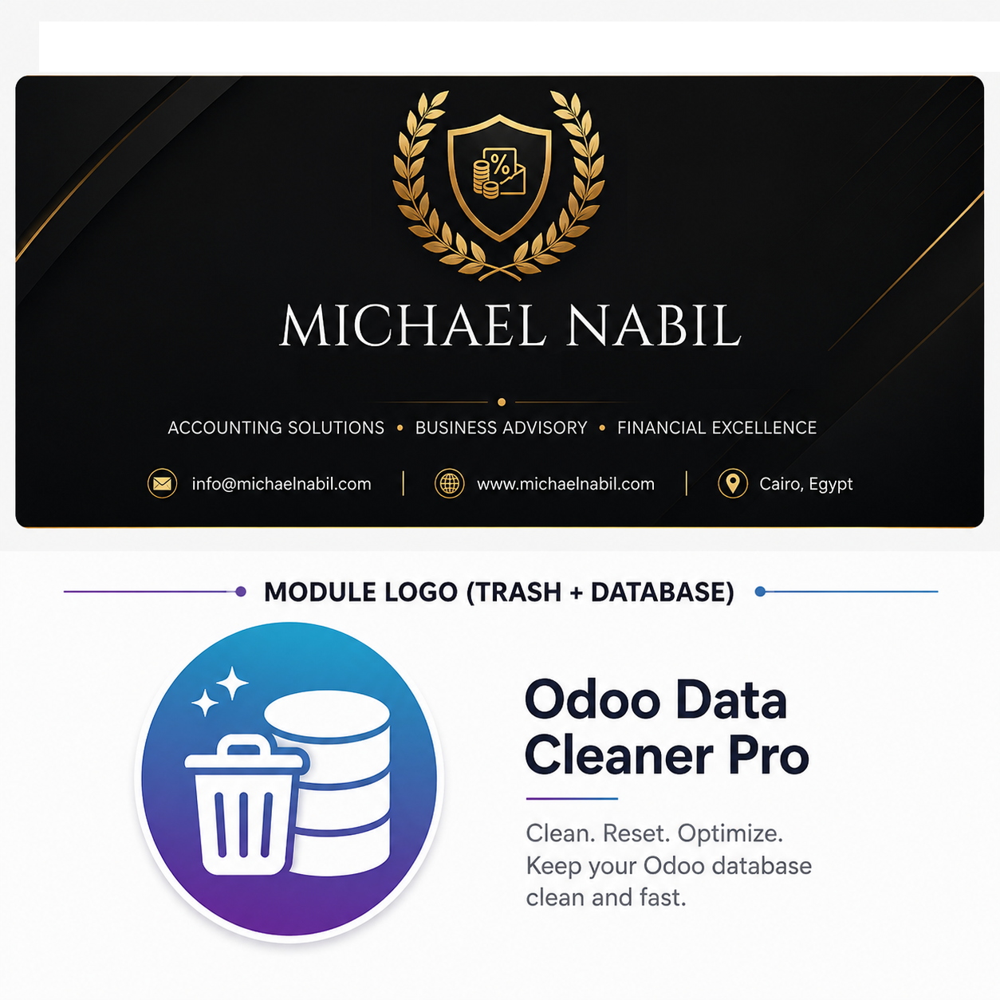

Odoo Data Cleaner Pro is a powerful utility designed to quickly remove unwanted or test data
from your Odoo system using a simple and intuitive wizard.
Clean Sales, Purchases, Inventory, Projects, Customers, Vendors, and Accounting data
with full control — or reset everything using the All Data option in one click.


Remove unwanted records using a simple wizard interface.
Enable "All Data" to clean everything instantly.
Choose exactly which modules to clean.


Select data categories -> Click Clear Data -> Done. Clear Data → Done.



Email: info@michaelnabil.com
Email2: michaelnabilenoch@gmail.com